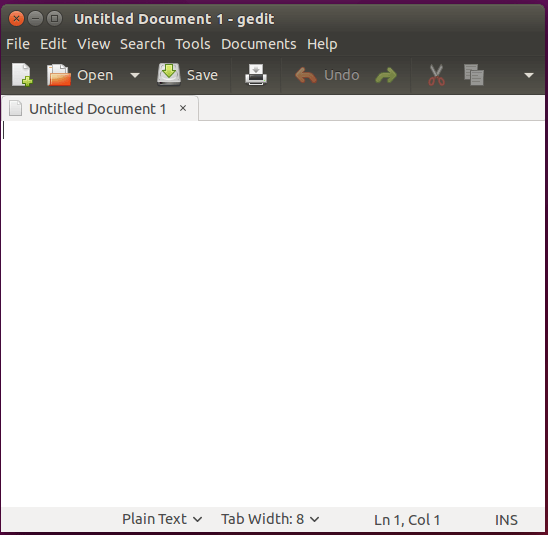

Editores de texto para linux
O LibreOffice é uma poderosa suíte de produtividade de escritório com planilha, editor de texto, editor de apresentação e muito mais. Sua interface limpa e suas ferramentas avançadas o farão soltar sua criatividade e melhorar sua produtividade. O LibreOffice incorpora várias aplicações que as torna a mais poderosa suíte de produtividade de escritório livre e aberta do mercado.
O VSCode é um editor de texto moderno robusto, gratuito e de código aberto desenvolvido pela Microsoft para computadores Linux, Mac e Windows.

Notepad ++ é um editor de texto personalizável desenvolvido com foco na velocidade e no tamanho mínimo do programa para plataformas Windows. Ele é desenvolvido com base no editor de texto Scintilla e pode ter sua funcionalidade ampliada com toneladas de plugins.

O Vim é um poderoso editor de texto baseado em linha de comando que aprimorou as funcionalidades do antigo editor de texto Unix Vi. É um dos editores de texto mais populares e amplamente usados, por isso muitos usuários costumam se referir a ele como um editor de programador. Ele ativa o destaque de sintaxe ao escrever código ou editar arquivos de configuração

Gedit é um editor de texto baseado em GUI de uso geral e é instalado como editor de texto padrão no ambiente de área de trabalho Gnome. É simples de usar, altamente plugável e um editor poderoso com os seguintes recursos
Nano é um editor de texto fácil de usar, especialmente para usuários Linux novos e avançados. Ele melhora a usabilidade, fornecendo ligação de teclas personalizável.

Emacs é um editor de texto altamente extensível e personalizável que também oferece uma interpretação da linguagem de programação Lisp em seu núcleo. Extensões diferentes podem ser adicionadas para oferecer suporte a funcionalidades de edição de texto.

Kate é um editor de texto rico em recursos e altamente plugável que vem com o KDesktop Environment (KDE). O projeto Kate visa o desenvolvimento de dois produtos principais que são: KatePart e Kate. O KatePart é um componente de editor de texto avançado incluído em muitos aplicativos KDE que pode exigir que os usuários editem o texto, enquanto o Kate é um editor de texto com interface de documentos múltiplos (MDI).